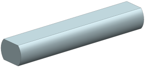
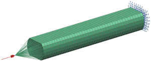
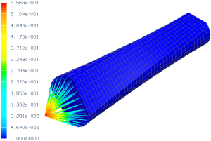
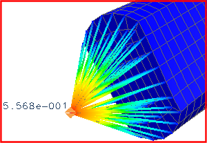

In Advanced Simulation, 1D connection elements are typically used to join dissimilar meshes and transmit loads. The following project uses an RBE3 spider element to apply a torsional load to a shaft modeled using solid elements.
A shaft with a double-D cross section is shown below. Model the shaft with solid elements and use an RBE3 spider element to apply a torsional load. Using the SOL 101 Linear Statics - Global Constraints solution sequence, determine the amount the shaft twists.

|
Property |
Value |
|
Part |
double_D_rod.prt |
|
Solution sequence |
SOL 101 Linear Statics - Global Constraints |
|
Idealization |
None |
|
Material |
Aluminum 2014 |
|
Mesh |
CHEXA8 Element size 2.5 mm |
|
Constraints |
Fix one end of the shaft |
|
Loads |
Apply a 25 N-m torsional moment |

A summary of the steps to complete the analysis is listed below.
Open the part file and start Advanced Simulation. Create new FEM and Simulation files.
Define the material and the physical properties and create a 3D mesh collector.
For a detailed description of how to complete this step, see the Define mesh properties with mesh collectors activity.
To create a CHEXA8 mesh, use the 3D Swept Mesh command. Enter 2.5 mm for the element size, select On-Zero Triangles from the Attempt Quad Only list, and assign the mesh to the mesh collector you created.
To create an RBE3 spider element at one end of the model, use the 1D Connection command.
From the Type list, select Point to Face.
Define the source point using the Point Dialog and enter -120 for the Y-coordinate.
Select the end of the shaft as the target face.
From the Type list, select RBE3.
Make the Simulation the work part.
To constrain the model, use the Fixed Translation Constraint command.
To apply the 25 N-m torsional moment, use the Moment command. Select the point created with the RBE3 mesh, enter 25 N-m for the magnitude, and select the YC-Axis as the direction.
|
Note |
When creating the torsional moment, be sure the units are correct. |
Solve the model.
To access the analysis results, in the Simulation Navigator, double-click Results. To view a contour plot of rotation about the Y-axis, in the Post Processing Navigator, expand Solution 1 if necessary. Next, expand Rotation-Nodal and double-click Y. The resulting contour plot (in degrees) should look similar to the one shown below.

|
Note |
Because solid elements do not possess rotational DOF, all the nodal rotations for the solid elements are zero. However, because 1D connection elements possess all six DOF, moments can be applied to and rotations can be measured with the source point for the 1D connection. An RBE3 spider element is used for the 1D connection because it is flexible, which allows the cross section to distort. |
Use the Identify Results command to determine the rotation about the Y-axis of the source point for the RBE3 spider. The result (in degrees) is shown below.

For your reference, a completed model for this project is located in the ..\projects\solved_project_models folder.